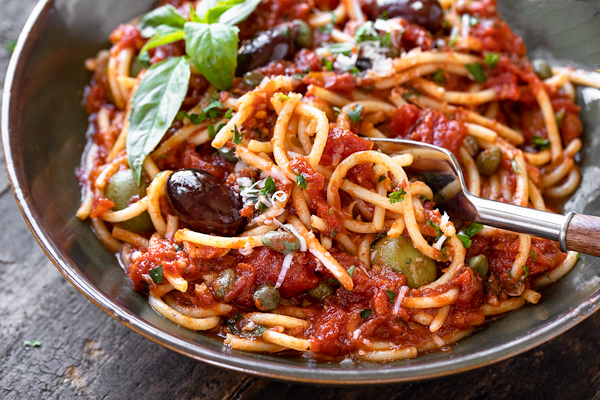

Spaghetti alla Puttanesca

Pasta Puttanesca is a bold and flavorful Italian pasta dish hailing from
the Campania region. Known for its robust sauce made with tomatoes,
olives, capers, and garlic, this dish is a celebration of Mediterranean
flavors. It’s a quick and satisfying choice for those craving a tangy,
slightly spicy, and briny pasta experience.
What You'll Need
- 400g spaghetti
- 2 tbsp extra virgin olive oil
- 4 cloves garlic, thinly sliced
- 1 can (400g) crushed tomatoes
- 1/2 cup pitted Kalamata olives, halved
- 3 tbsp capers, rinsed and drained
- 1/2 tsp red pepper flakes (adjust to taste)
- Salt and black pepper, to taste
- Fresh parsley, chopped, for garnish
- Grated Pecorino Romano cheese, for serving
How To Make It
-
Cook the Pasta:Cook the spaghetti or linguine in a
large pot of salted boiling water until al dente. Drain, reserving 1/2
cup of pasta water..
-
Make the Sauce: In a large skillet, heat the olive
oil over medium heat. Add the sliced garlic and red pepper flakes.
Sauté until the garlic is golden but not browned.
-
Add Tomatoes and Briny Ingredients:Pour in the
crushed tomatoes, olives, and capers. Season with salt and black
pepper. Simmer the sauce for about 10 minutes, allowing the flavors to
meld together. If the sauce thickens too much, add a bit of the
reserved pasta water.
-
Combine Pasta and Sauce:Toss the cooked pasta in the
skillet with the sauce, ensuring the pasta is well coated.
-
Serve:Divide the pasta among plates. Garnish with
fresh parsley and a generous sprinkle of grated Pecorino Romano
cheese. Enjoy this vibrant and flavorful Pasta Puttanesca!
Enjoy your homemade Spaghetti alla Puttanesca, and savor the authentic
flavors of Italy!
Back to Recipes